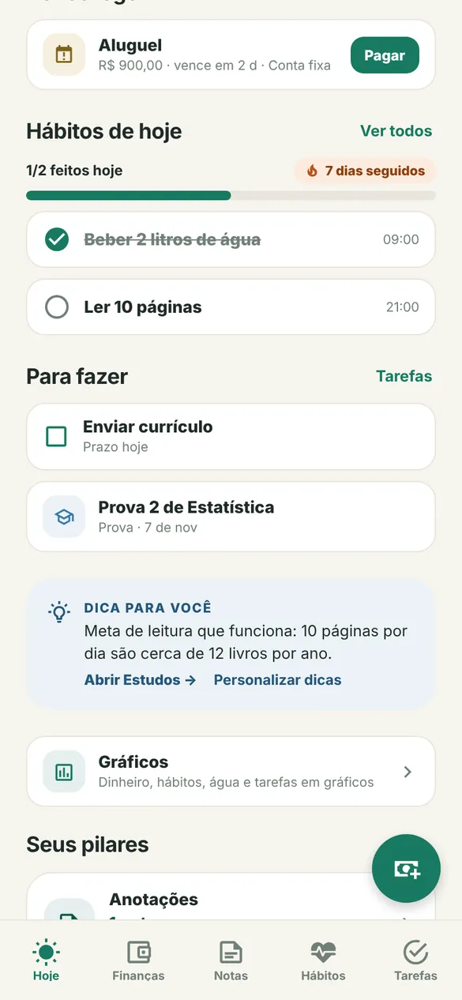
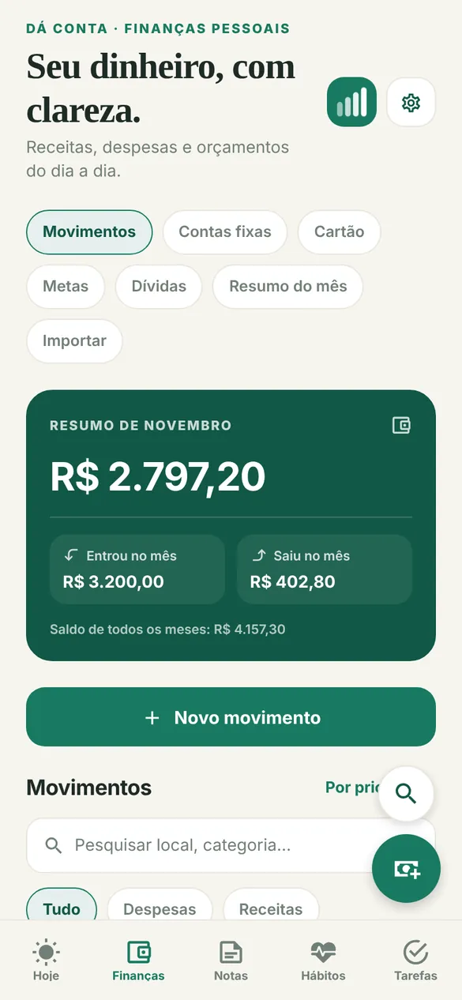
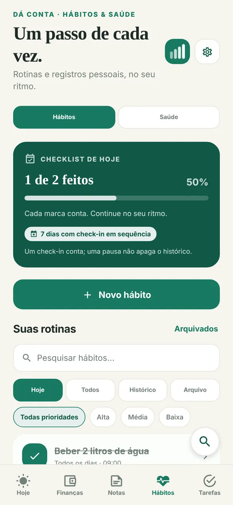
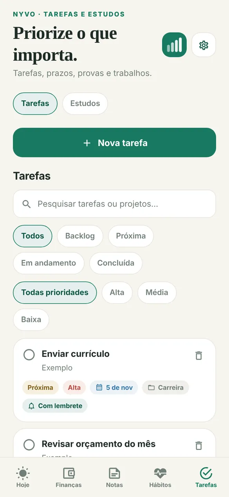
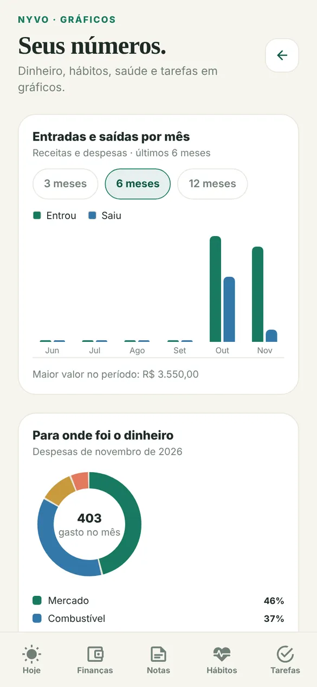

Veja o Dá Conta em 30 segundos
Dá o play para ver como registrar um gasto com uma frase e como dinheiro, hábitos e tarefas ficam no mesmo lugar.
Começar grátisO que você encontra lá dentro
Telas reais do Dá Conta com dados de exemplo. Cada parte funciona sozinha, mas todas aparecem juntas na tela Hoje.





Começa em três passos
Leva menos de um minuto. Não precisa de cadastro para testar.
- Diga seu nome e o que quer organizar
Dinheiro, estudos, hábitos ou tarefas. A tela inicial muda conforme a sua escolha.
- Registre o primeiro gasto ou hábito
Escreva “gastei 45 no mercado” ou marque “beber água”. O Dá Conta entende e guarda.
- Deixe o Dá Conta lembrar por você
Avisos de contas a vencer, provas e hábitos, no horário que você escolher.
Seus dados continuam seus
O Dá Conta foi feito para organizar a sua vida, não para vender anúncios.
- Sem conta, tudo fica no seu aparelhoNada sai do celular ou do navegador.
- Com conta grátis, sincronizaUse no celular e no notebook e não perca nada ao trocar de aparelho.
- Nunca pedimos CPF, cartão ou senha do bancoVocê digita só o que quiser acompanhar.
- Você pode copiar ou apagar tudoBackup e exclusão ficam em Configurações, conforme a LGPD.
Ferramentas grátis
- Calculadora de 13º salário 2026Veja as parcelas e o valor líquido em segundos.
- Calculadora de salário líquidoQuanto cai na conta com as tabelas de 2026.
- Calculadora de reserva de emergênciaSua meta e em quantos meses você chega lá.
- Ver todas as ferramentasHoras extras, juros do rotativo do cartão, melhor dia para comprar no cartão, plano para quitar dívidas, dividir a conta entre amigos, custo por km do carro, álcool ou gasolina, alugar ou financiar imóvel, quanto cobrar por hora, juros compostos, quanto rende a poupança, parcelamento, orçamento, desafio das 52 semanas e Pomodoro.
Guias rápidos
Dicas práticas para começar, mesmo que você nunca tenha usado um app de organização.
- Como controlar seus gastos sem planilhaUm método de 10 minutos por semana para saber para onde vai o seu dinheiro.
- Como criar hábitos que duramÁgua, leitura e academia: comece pequeno e acompanhe a sequência.
- Como organizar os estudos da faculdadeProvas, trabalhos e Pomodoro sem esquecer nenhum prazo.
Perguntas frequentes
O Dá Conta é grátis?
Sim. O Dá Conta é gratuito e não tem anúncios. Você pode usar todas as funções sem pagar nada.
Vai ter versão paga?
Estamos preparando o Dá Conta Pro, com relatórios avançados e mais personalização. Ainda não está à venda e nada é cobrado. O que você usa hoje continua grátis, e dá para pedir aviso do lançamento no app, em Configurações › Ajuda.
Preciso criar conta para usar?
Não. Sem conta, seus dados ficam salvos só no seu aparelho. Se quiser usar no celular e no computador ao mesmo tempo, ou não perder nada ao trocar de celular, crie uma conta grátis com e-mail e senha.
O Dá Conta substitui a planilha de gastos?
Para a maioria das pessoas, sim. Você registra gastos e receitas, separa por categoria, acompanha o saldo do mês, contas fixas, fatura do cartão, metas e dívidas, e vê tudo em gráficos. Também dá para importar o extrato do banco em OFX ou CSV.
O app avisa quando uma conta vai vencer?
Sim. Você escolhe quantos dias antes e em que horário quer o aviso. O mesmo vale para provas, tarefas com prazo e hábitos.
Serve para estudante organizar provas e trabalhos?
Serve. Em Tarefas e Estudos você cadastra matérias, provas, trabalhos e leituras com data, e usa o Pomodoro para estudar em blocos de foco.
Tem app para Android ou iPhone?
O Dá Conta funciona no navegador de qualquer celular e pode ser adicionado à tela inicial como um app. A versão para Android na Play Store está a caminho.
Teste agora, de graça
Abre no navegador do celular ou do computador. Para usar como app, toque em “Adicionar à tela inicial”.
Abrir o Dá Conta